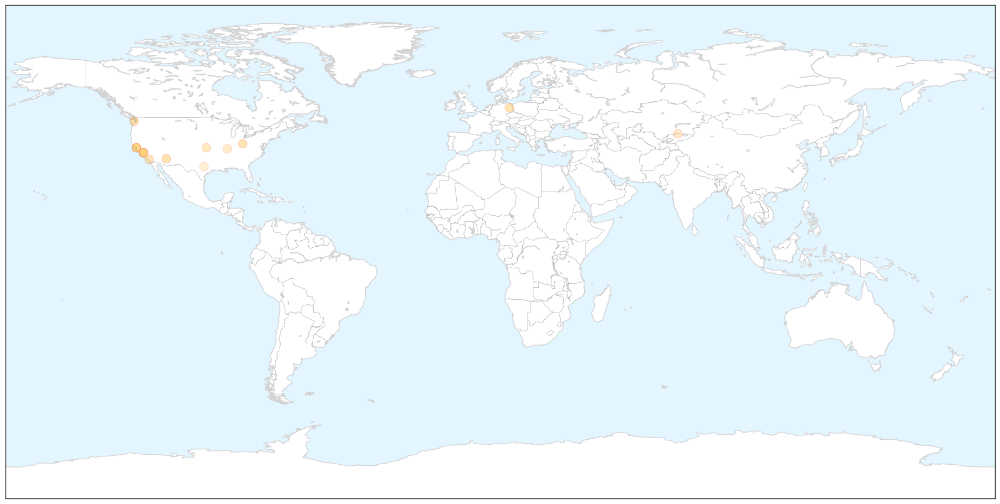

Toggle navigation
Early Warning
Return to Dashboard
Points of Interest
About the Project
Measles
Mar 07, 2015
Compare to:
-
Dengue Fever
Hemmorhagic Fever
Mold/Fungal Infection
Influenza
Meningitis
Pertussis / Whooping Cough
Middle East Respiratory Syndrome
Cholera
Hepatitis
Chikungunya
Yellow Fever
Bubonic Plague
West Nile Virus
Swine Flu
Ebola
Unknown
Mumps
30 Day Trends
Web: 0
alerts
, 2
warnings
Twitter: 1
alerts
, 0
warnings
Top Articles:
0.953
Update: Measles exposure at Berkeley library is ruled out
0.950
Health officials urge measles vaccinations
0.913
Prevention the Key to Keeping Measles Out of Indian Country
0.894
Measles test results pending for two more North Olympic Peninsula residents -- Port Angeles Port Townsend Sequim Forks Jefferson County Clallam County Olympic Peninsula Daily news
0.871
Berlin measles epidemic reaches new high
0.862
Ohio vaccination rates drop, exemptions climb as debate rages
0.852
Dr. Roach: The facts on getting a measles booster
0.841
Aliso Niguel High School
0.722
Three Day Measles Is Mild to Grown Ups But Deadly To an Unborn Baby
0.688
Kyrgyzstan Starts Measles Prevention Program
0.667
City announces possible measles exposure at Berkeley libraries
0.618
Locals share mild worries about issue
0.522
MMR jab: Somali migrants have lingering fears on autism
Top Tweets:
No tweets found for Mar 07, 2015
Web/News Articles
X
Tweets
X
Article Locations
X

Article Confidences
X